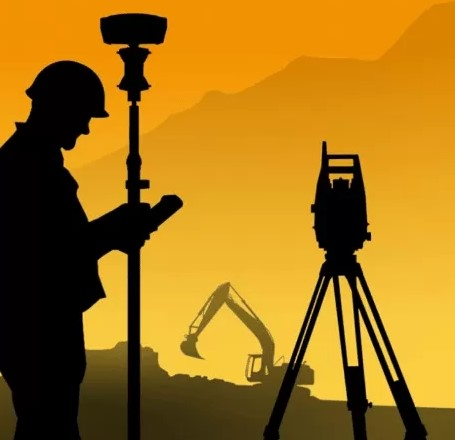
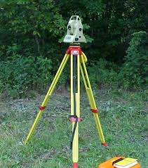
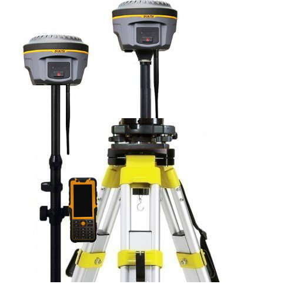
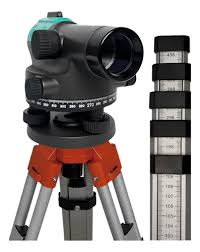
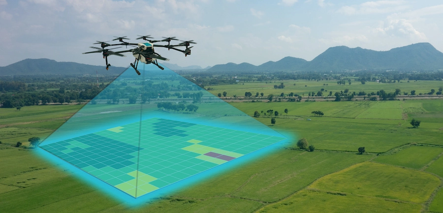
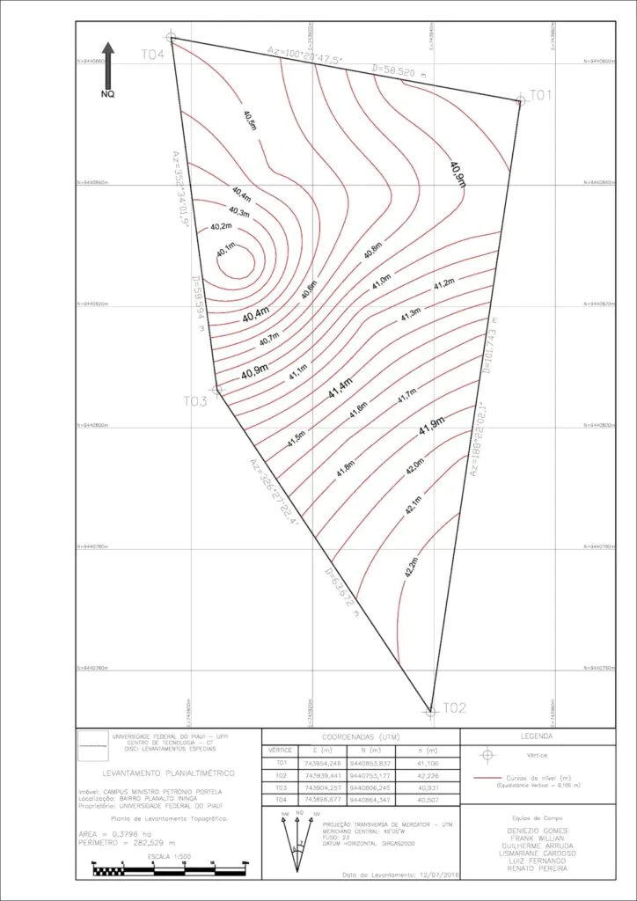
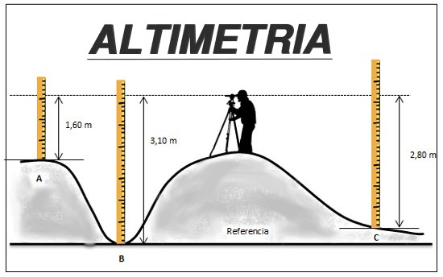

A topografia é a ciência que estuda o relevo e as características da superfície terrestre, representando-as através de mapas e plantas topográficas.

Equipamento eletrônico que mede ângulos e distâncias com alta precisão, fundamental para levantamentos topográficos.

Sistema de posicionamento global com correção em tempo real, permitindo precisão centimétrica em levantamentos de grandes áreas.

Instrumento usado para determinar diferenças de altura entre pontos, essencial para nivelamento de terrenos.

Aeronave não tripulada equipada com câmeras e GPS, utilizada para levantamentos aéreos e geração de modelos 3D do terreno.

Parte da topografia que estuda as medidas e projeções horizontais do terreno, ignorando as variações de altitude.

Ramo da topografia que estuda as diferenças de nível e altitudes do terreno, complementando a planimetria.
Rua Clarice Lispector, 37 - Santa Terezinha - Pontal do Paraná
Paraná - PR - CEP 83255-000
Email: formigeo@gmail.com
© 2026 FormiGeo - Todos os direitos reservados
Ativar Windows ⚙️ Acesse Configurações para ativar o Windows.